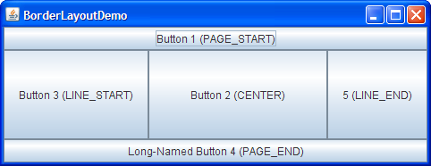

Lección: Disponer Componentes Dentro de un Contenedor
Una Guía Visual a los Gestores de Diseño
Varias clases de AWT y Swing suministran gestores de diseño para uso general:
Esta sección muestra IGUs de ejemplo que usan estos gestores de diseño, y le indican dónde encontra la página cómo-hacer para cada gestor de diseño. Puede encontrar enlaces para ejecutar los ejemplos en las páginas cómo-hacer y en el índice de ejemplos.
Nota: Esta lección cubre la escritura de código de diseño a mano, lo cual puede ser desafiante. Si no está interesado en aprender todos los detalles de la gestión del diseño, preferirá usar el gestor de diseño
GroupLayout combinado con una herramienta de construcción para diseñar su IGU.
Una de tales herramientas de construcción es el
EID NetBeans. De otra manera, si quiere
codificar a mano y no quiere usar GroupLayout, entonces se recomienda GridBagLayout
como el gestor de diseño más flexible y potente.
Si está interesado en usar JavaFX para crear su IGU, vea Trabajar Con Diseños en JavaFX.
BorderLayout

Cada panel de contenido es inicializado para usar un BorderLayout. (Como en
Usando Contenedores de Nivel
Superior explican, el panel contenedor es el contenedor principal en todos los marcos, applets, y
diálogos). Un BorderLayout coloca los componentes en hasta cinco áreas: arriba (top), abajo
(bottom), izquieda (left), derecha (right), y centro (center). Todo el espacio extra es colocado en el área
central. Las barras de herramientas que se crean usando
JToolBar deben ser creadas dentro
de un contenedor BorderLayout, si quiere ser capaz de arrastrar y soltar las barras fuera de sus
posiciones iniciales. Para más detalles, vea Cómo Usar BorderLayout.
BoxLayout

La clase BoxLayout coloca los componentes en una una única fila o columna. Respeta los tamaños
máximos solicitados por los componentes y también le permite alinear componentes. Para más detalles,
vea Cómo Usar BoxLayout.
CardLayout


La clase CardLayout le permite implementar un ára que contiene diferentes componentes en tiempos
diferentes. Un CardLayout es a menudo controlado por un cuadro combinado, con el estado del cuadro
combinado determinando qué panel (grupo de componentes) muestra el CardLayout. Una alternativa a
usar CardLayout es usar un
panel tabulado, el cual
suministra una funcionalidad similar pero con un IGU predefinido. Para más detalles, vea
Cómo Usar CardLayout.
FlowLayout

FlowLayout es el gestor de diseño por defecto para cada JPanel. Simplemente establece
los componentes en una sola fila, comenzando una nueva fila si su contenedor no es lo suficientemente ancho.
Ambos paneles en CardLayoutDemo, mostrados previamente, usan FlowLayout.
Para más detalles, vea Cómo Usar FlowLayout.
GridBagLayout

GridBagLayout es un gestos de diseño flexible y sofisticado. Alinea los componentes colocándolos
en una parrilla de celdas, permitiendo a los componentes expandirse más de una celda. Las filas en la parrila
pueden tener diferentes alturas, y las columnas de la parrilla pueden tener diferentes anchuras. Para más
detalles, vea Cómo Usar GridBagLayout.
GridLayout

GridLayout simplemente hace que un montón de componentes sean iguales en tamaño y los visualiza en
el número de filas y columnas requerido. Para más detalles, vea Cómo Usar GridLayout.
GroupLayout

GroupLayout es un gestor de diseño que fue desarrollado para su uso con herramientas de
construcción de IGU, pero puede usarse también manualmente. GroupLayout trabaja con los diseños
horizontal y vertical por separado. El diseño se define para cada dimensión independientemente. En
consecuencia, sin embargo, cada componente debe definirse dos veces en el diseño. La ventana Find mostrada
arriba es un ejemplo de un GroupLayout. Para más detalles, vea
Cómo Usar GroupLayout.
SpringLayout

SpringLayout es un gestor de diseño flexible diseñado para usarse con constructores de IGU. Le
permite especificar precisas relaciones entre los límites de los componentes bajo su control. Por ejemplo,
podría definir que el límite izquierdo de un componente tiene una cierta distancia (la cual puede ser calculada
dinámicamente) desde el límite derecho de un segundo componente. SpringLayout dispone los hijos de
su contenedor asociado de acuerdo al conjunto de restricciones, como se verá en
Cómo Usar SpringLayout.